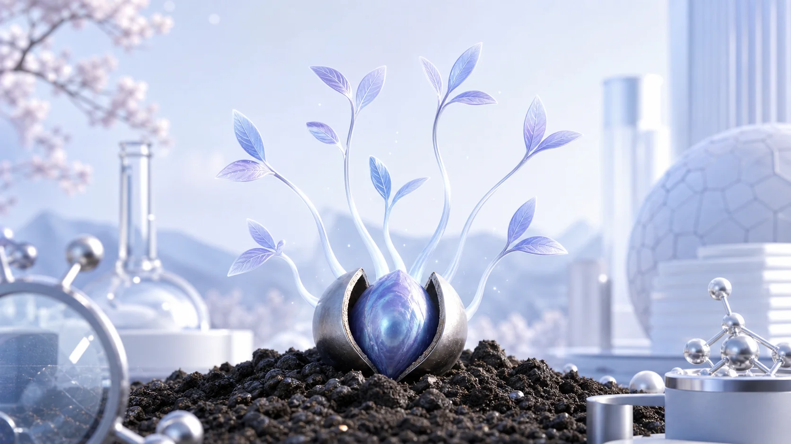
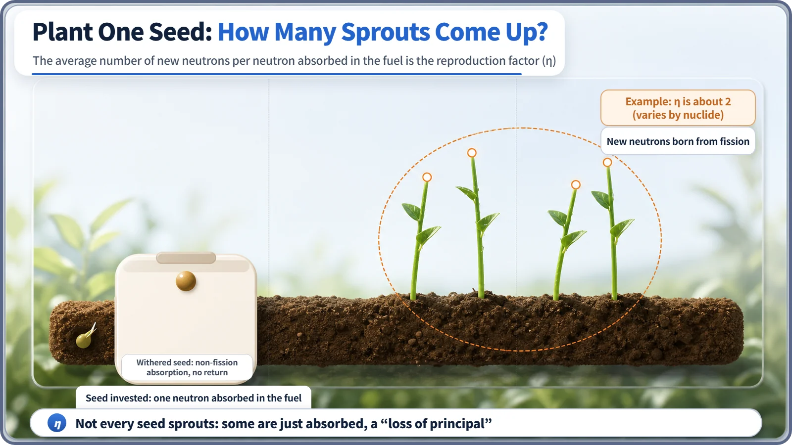
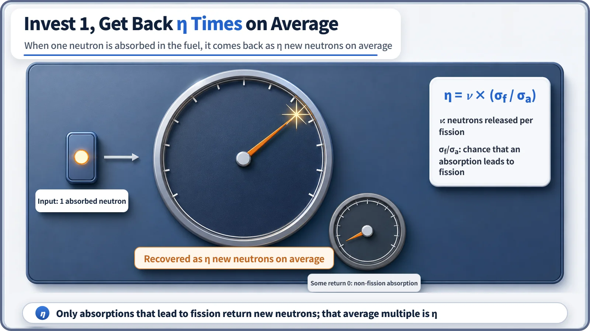

Neutron Physics & the Core · 089
What If Your Investment Didn't Always Pay Interest? The Reproduction Factor (Eta) and a Neutron's Real Rate of Return
Not every neutron absorbed in the fuel causes fission. The reproduction factor is the average return, in new neutrons, per absorbed neutron.

A neutron absorbed in reactor fuel does not always cause fission. The reproduction factor η (eta) is the average number of new fission neutrons born per neutron absorbed in the fuel, η = ν × (σf / σa): neutrons per fission times the chance that an absorption leads to fission. It is always less than or equal to ν, and it is set mainly by the choice of fuel. [1]
An investment that doesn't always pay
Ever had this happen? You had some spare cash, spread it across a few accounts, and later found that one had grown with interest, another held exactly what you put in, and a third had even shrunk a little after fees. The fact that you "invested" tells you nothing about the result on its own. Whether the money actually earned something, or simply sat there and vanished, is a separate question.
The same thing happens inside a reactor at the moment a neutron is absorbed in the fuel. "It was absorbed" doesn't settle anything yet. The absorption might pay off as fission, a "return" that produces several new neutrons, or it might end with the neutron simply swallowed and nothing to show for it. Today's topic, the reproduction factor (eta, η), is the number that tells you how profitable this "neutron investment" is on average.
The very first of the six gates
The step from one generation of neutrons in a reactor to the next can be pictured as passing through six gates. One of them, the thermal utilization factor (f), asks whether a thermal neutron is absorbed in the fuel rather than in some other material. The reproduction factor η sits one step earlier: in practice, it is the very first gate.
Here's the division of labor. If f is the gate that decides "does the neutron reach the fuel in the first place?", η is the gate that decides "once the neutron is absorbed in the fuel, does it actually cause fission and produce new neutrons, or is it just absorbed and that's the end of it?" It's the story of what happens after arrival.
Not every investment turns into interest
Back to the investment analogy. Think of a neutron being absorbed in the fuel as "investing money." This investment really has two possible endings.
The first is fission. The absorbed neutron splits a fuel nucleus, and in return about 2 to 3 new fast neutrons fly out, on average. The investment comes back several times over, with interest. [1]
The second is non-fission absorption (radiative capture). The nucleus swallows the neutron but doesn't split; it just gives off a gamma ray and quietly turns into a slightly heavier nucleus. The money is absorbed somewhere and not a single new neutron comes back: a "loss of principal."

The huge number of neutrons absorbed in the fuel split between these two paths. Combine the fraction that earned the "return" of fission with the number of neutrons each fission releases, boil it down to one average, and you have the reproduction factor η. In one sentence:
The reproduction factor (η) is the average number of new fission neutrons born per neutron absorbed in the fuel.
Working out the rate of return: the product of two numbers
So how do you calculate this average return? You only need to multiply two numbers.
One is ν (nu): the average number of new neutrons released when one fission happens. It's nearly fixed for each nuclide (roughly between 2.4 and 2.9). Think of it as the guaranteed interest rate you get whenever a fission does happen. [1]
The other is the probability that an absorption leads to fission: out of all absorbed neutrons, the fraction that goes on to cause fission. Using the cross-section symbols that describe absorption likelihood, it's σf (the fission cross section) divided by σa (the total absorption cross section, i.e. the fission share σf plus the non-fission capture share σc). Think of it as the share of your money that actually went into the profitable venture.
Multiply the two and you get the reproduction factor:
η = ν × (σf / σa)
In plain words, the average return per absorbed neutron is "neutrons per fission" times "the chance that an absorption leads to fission in the first place." However large ν is, if σf/σa is small (if most absorbed neutrons end in simple capture), η stays low. Conversely, the closer σf/σa is to 1 (the more absorptions turn into fission), the closer η gets to ν.
The return differs a little from nuclide to nuclide. Commonly quoted approximate values for thermal neutrons are around 2.3 for U-233 and around 2.1 for U-235 and Pu-239. The exact decimals can vary slightly between references, but what matters is that η is clearly greater than 1, and that the return differs by nuclide. [2]

"Interest rate" versus "rate of return": two easily confused pairs
Two things trip people up here.
First, mistaking ν (nu) for η (eta). ν is the number of neutrons released "whenever a fission happens," a guaranteed interest rate, so to speak. η is the number of neutrons "per absorbed neutron," the real rate of return that also counts the cases that never become fission and end in a loss of principal. Since not every absorbed neutron causes fission, η is always less than or equal to ν.
Second, lumping η together with the thermal utilization factor f. f decides whether a neutron is absorbed in the fuel rather than in other core materials (moderator, coolant, structure, control rods and so on): choosing which account to put the money in. η comes after the money is already in the fuel account and asks whether that account actually paid interest. Both are gates in the six-factor formula, but they answer different questions.
Where does it connect? A designer's dilemma
The reproduction factor isn't something you can tweak in real time while the reactor is running. Moving control rods or changing the boron concentration in the coolant doesn't change η. Instead, this value is effectively settled at the design stage, when the fuel is chosen.
Raising the share of the nuclide that fissions easily (typically U-235) in the fuel increases the proportion of absorptions in the fuel that lead to fission, which pushes the overall return up. If, on the other hand, the fuel contains a lot of nuclides that don't fission readily, the share of absorptions that bring no return grows and η falls. Reactor designers adjust this nuclide mix of the fuel so that the overall six-factor product (k∞, k_eff) balances near 1. However smoothly the other five gates go, if the return at this very first gate is poor, balancing the whole thing becomes much harder. [1]
Today's one-line takeaways
- The reproduction factor (η, eta) is the average number of new fission neutrons born per neutron absorbed in the fuel.
- Not every absorbed neutron causes fission; some end in non-fission absorption, simply swallowed with no fission.
- η = ν × (σf / σa): "neutrons per fission (ν)" times "the probability that an absorption leads to fission (σf/σa)."
- Don't confuse ν (the guaranteed interest rate) with η (the real rate of return), and keep f (which account the money goes into) separate from η (whether that account paid interest).
- η isn't adjusted during operation; it is effectively set at the design stage, when the fuel's nuclide mix is chosen.